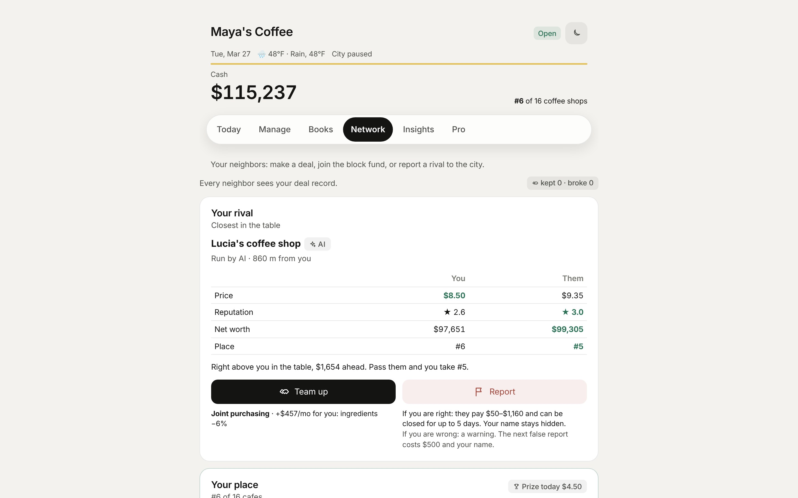
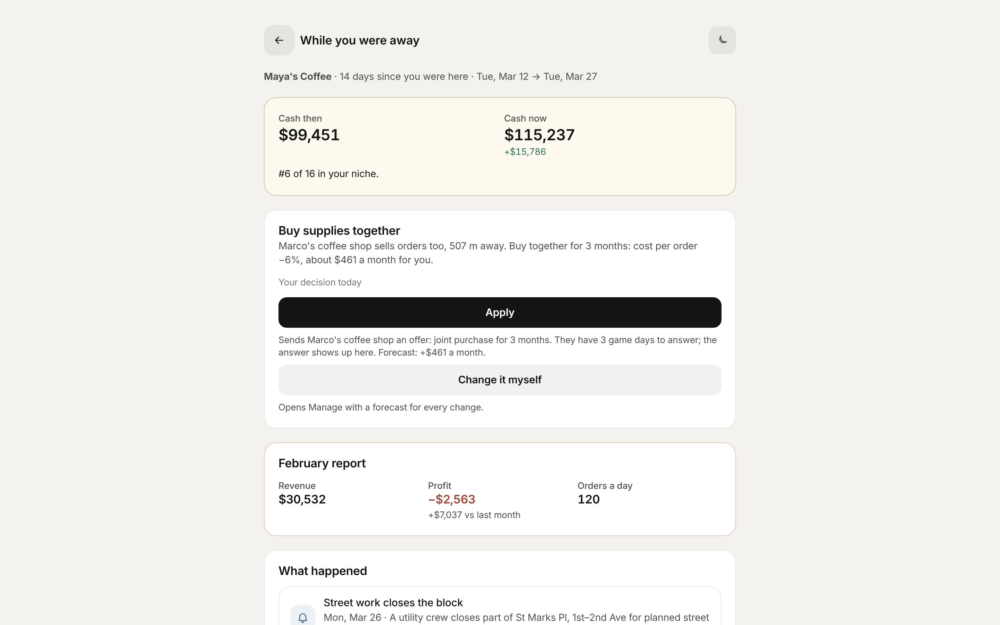

The cost of knowing if you’ll make it
An 18-seat coffee shop, , Manhattan: opening + a 6-month reserve — the personal plan in the game; the receipt lines come from it. Across the US: $80,000–300,000, Toast. The game costs $19 a month or $149 a year: docs/pitch/MONEY.md
Pure economics: rents, expenses. We can’t afford it
Café owner, Manhattan. 5 months
Albery Wu, Dandy Espresso, Madison Ave: “It was pure economics: rents, expenses. We just can't afford it.” dnainfo.com, 2014 · US food service: 81.6% are alive after one year, about 50% after five — BLS, Business Employment Dynamics, table 7
Live your first year — before you risk it

Game screens, captured on a 1440×900 computer: the city (East Village streets © OpenStreetMap; neighbor shops without a player are run by AI and marked AI; weather and events of the day) — docs/pitch/deck/capture.mjs. Rent:
You decide —
and see at once
how it ends


The Manage screen: price → , three real screenshots in a row. The forecast is computed by the game engine; it is a model, not a promise
No made-up numbers here

A rule from the personal plan in the game: . of numbers are marked verified; the rest are shown dashed — an estimate, labeled as such: node scripts/validate-all.mjs. Tests: npm test,
A neighbor is not scenery

- fine $50–$1,160
- closed up to 5 days
- false report: $500

The Network screen, two screenshots: the rival with their price and the Report button (“they pay $50–$1,160 and can be closed for up to 5 days”); below it, the table of places. The inspection outcome is computed by the engine, not scripted
One real day — one game month
One game month — free.
Then — a month

The return screen: . A game day lasts 48 minutes, 30 days take one real day, a year takes 12 days; after it you can live the year again at another address. The first month after the doors open is free. The price is a product decision: $19 a month or $149 a year, docs/pitch/MONEY.md
The path to ARR
Model: docs/pitch/model.mjs. LTV — retention from RevenueCat 2026; blended CAC — a click at Meta $0.70, 90% of payers come without ads (assumption): on ads alone CAC is , ads only test the message; our own conversion is not measured yet. Steps — 4% of each circle pay (assumption), log scale; the third at 4% gives , $100M needs : payers × $14.95 × 12 out of 13.7M (NORC, Census)
24 hours. Check it yourself
Each bar is the commits of a quarter hour: git log, . Tests: npm test, . Comparison — docs/pitch/COMPETITORS.md